The person behind the page
Student life, seen through my own lens — one lesson, photo and experience at a time.
An Information Technology student at Makerere University. This is a little window into what I’m learning, what I enjoy, and the moments that make up life beyond the classroom.
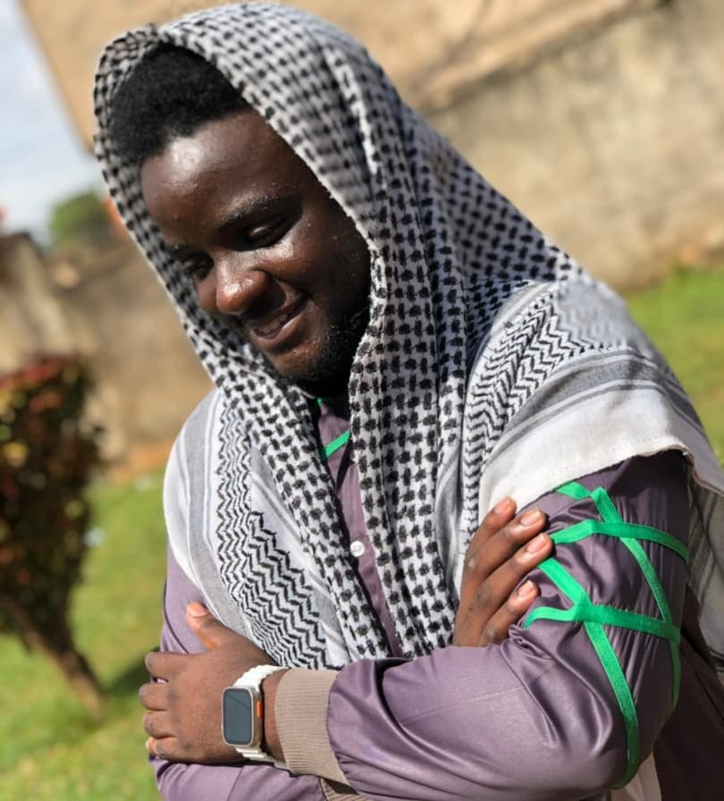
A personal page about the mix of learning, exploring and taking time to recharge.
Student life, seen through my own lens — one lesson, photo and experience at a time.
I study Information Technology at Makerere University. My studies introduce me to areas such as databases, networking, web development, and IT law and ethics.
Outside class, I enjoy photography, exploring new places, learning how things are built, spending time with people I care about, and finding moments to unwind. This page brings those different sides of my university experience together.
Areas that are part of my Information Technology studies — not a list of finished projects, but subjects I’m exploring.
Understanding how information is organised, stored and retrieved.
Exploring how devices and systems connect and communicate.
Learning how websites and web experiences are put together.
Thinking about responsible and ethical use of technology.
Build strong technical skills, create useful systems and use technology to solve real-life problems.
Photography, exploring new places and noticing the details that make a place feel different.
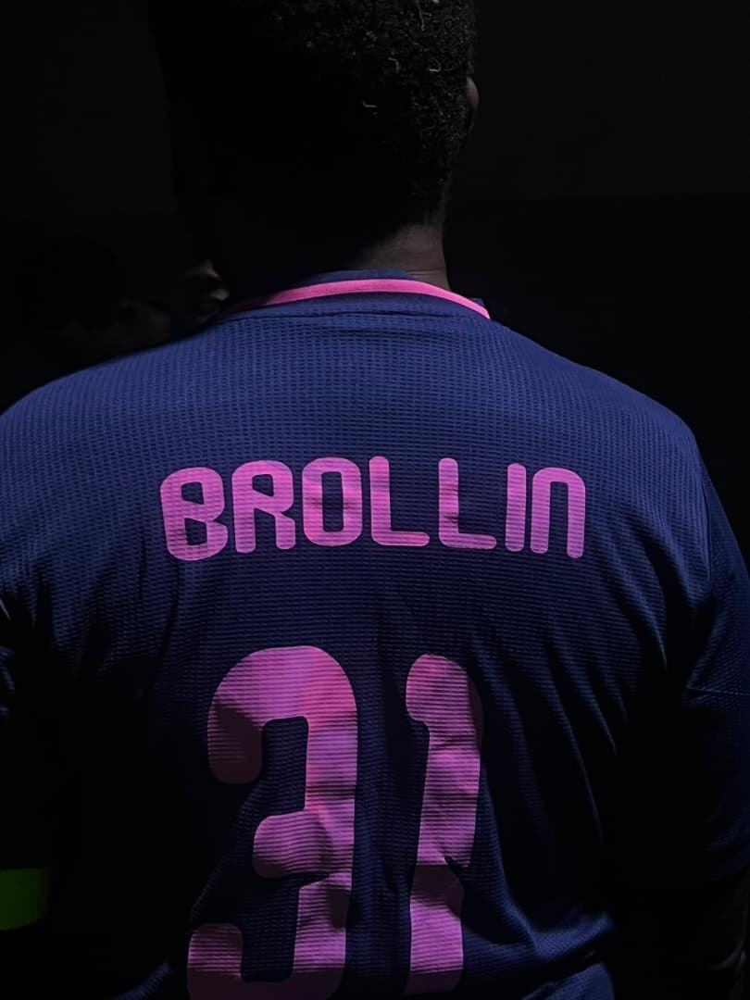
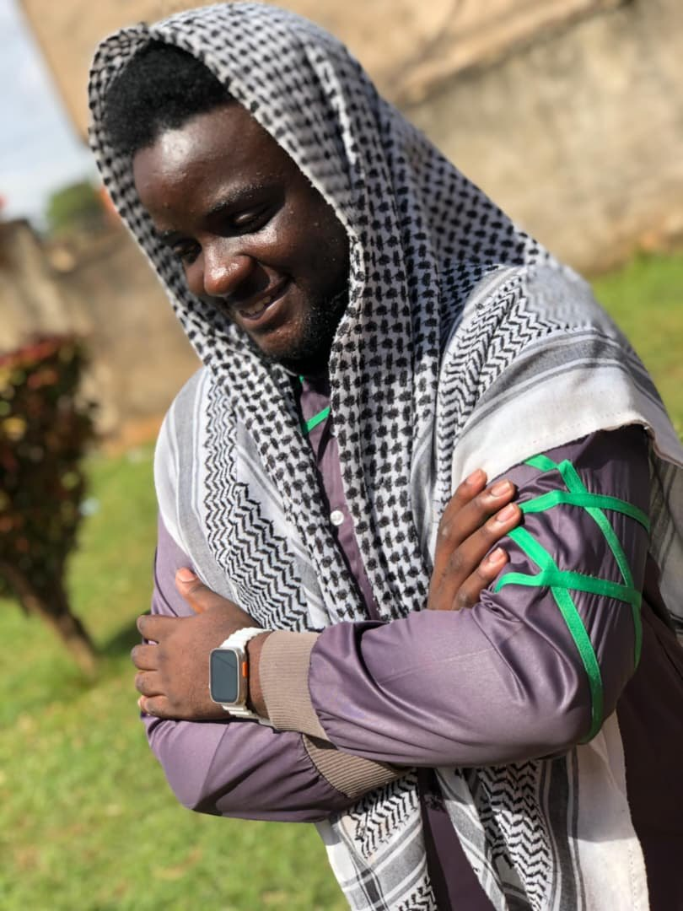
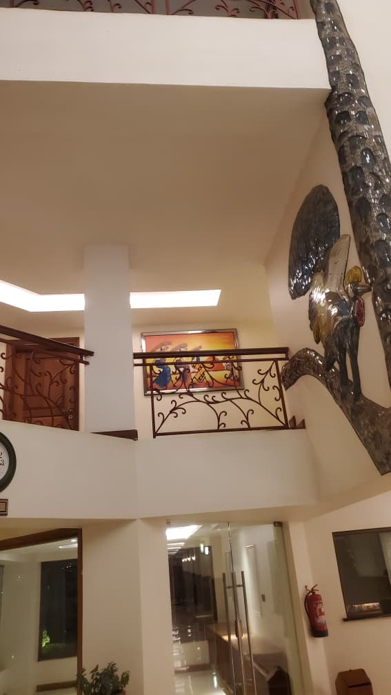
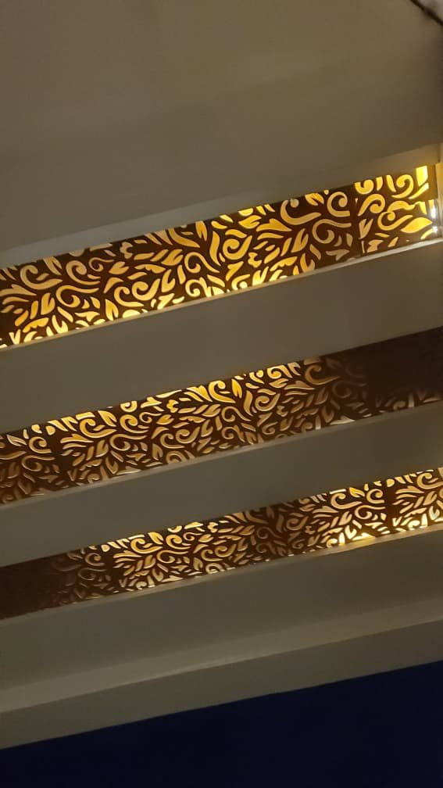
A music clip from TikTok.
Hobbies give me time to relax, try new ideas and see the world differently.
Snapshots of study life, classroom moments and practical learning along the way.
Explore core concepts across databases, networking, web development and IT law and ethics.
Use study sessions and practical exercises to make technical concepts clearer.
Work towards strong technical skills and useful systems that address real-life problems.
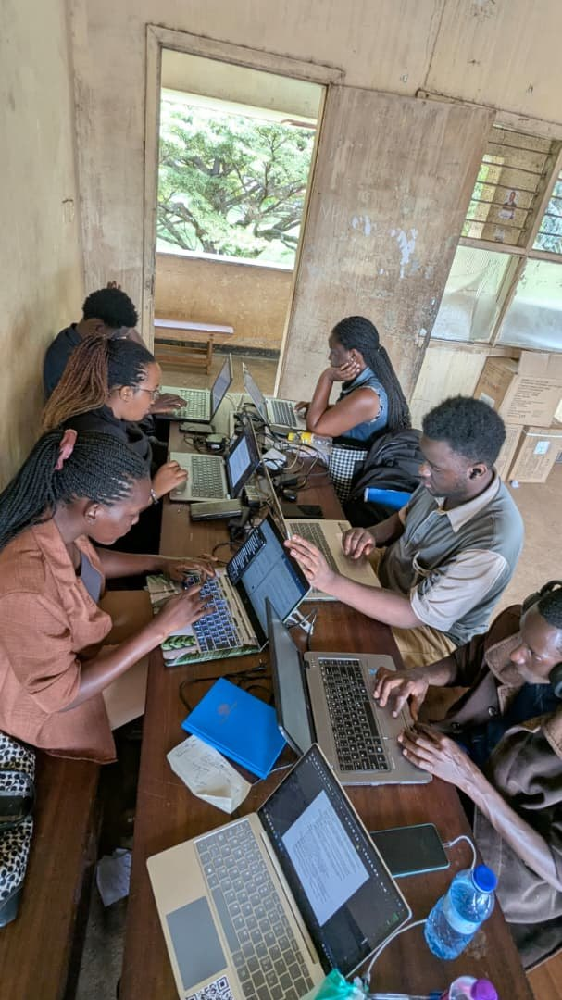
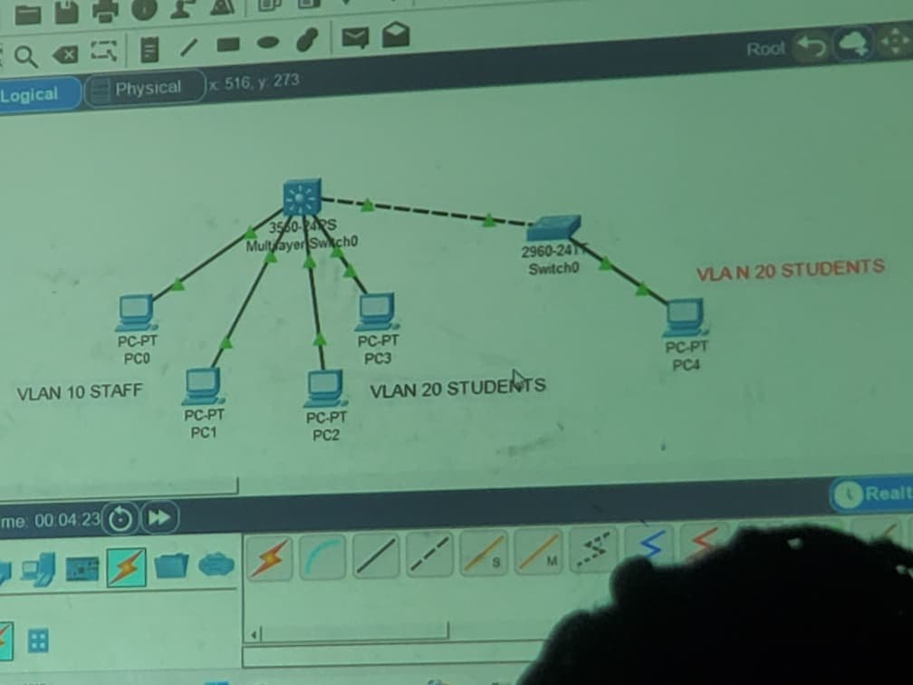
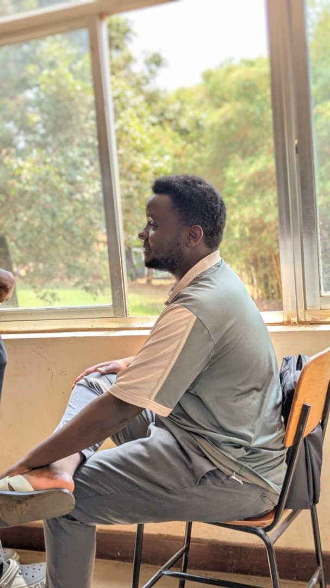
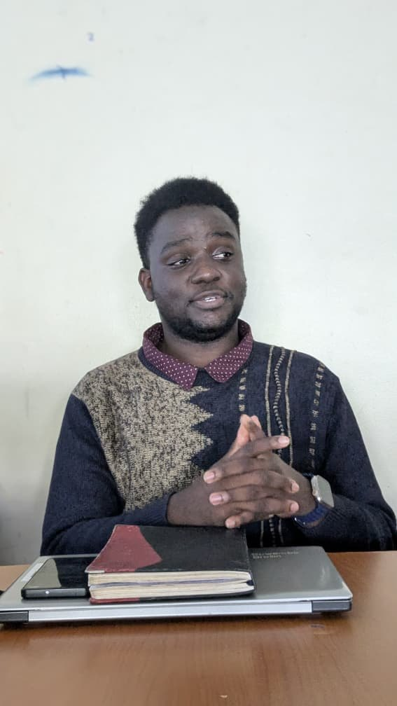
Rest, good food and time with people I care about help me recharge for the week ahead.
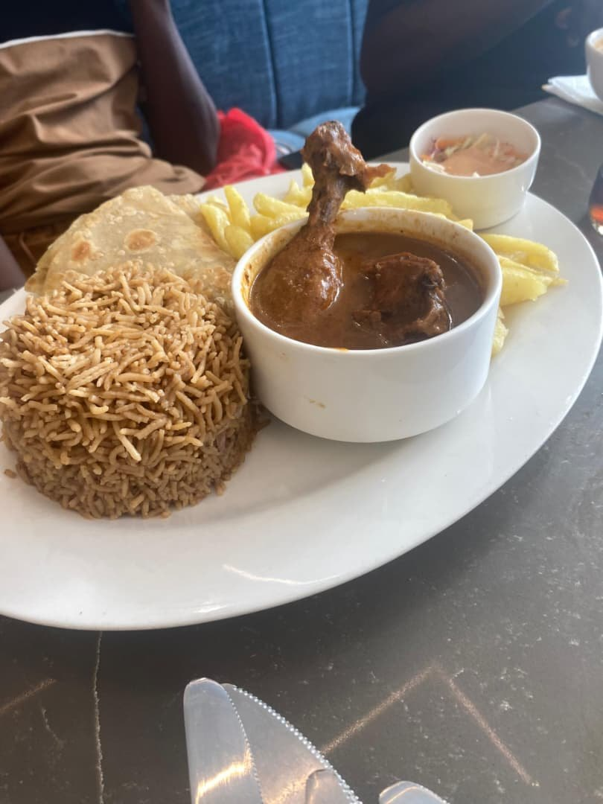
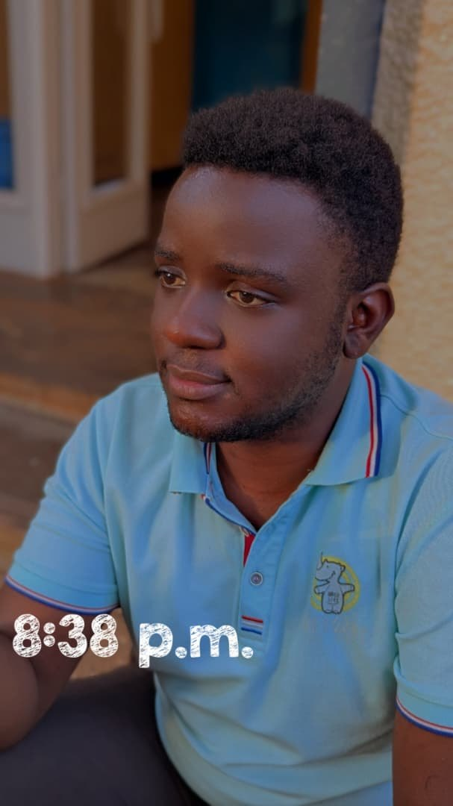
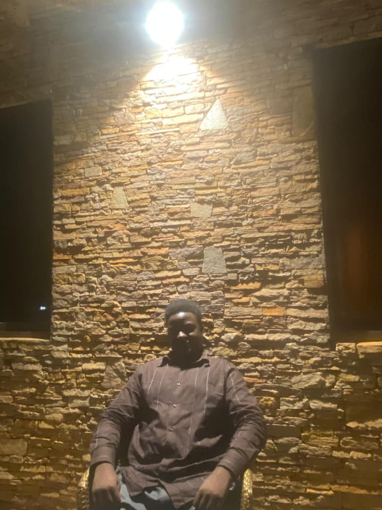
A little glimpse outside the study routine.
Free time helps me rest and stay balanced. Not every meaningful moment has to happen in a classroom.
I want to keep strengthening my technical skills, create useful systems and learn how technology can solve real-life problems.